@产品经理 → PRD.md → @UI
切换岗位，就是一次真实交接
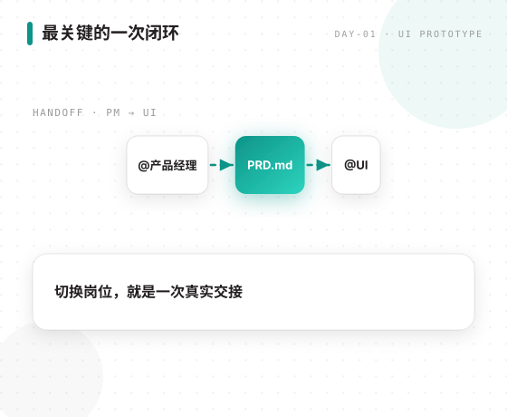
传统：线框 · 视觉稿 · 调色 · 组件
信息层级 · 操作路径 · 设计约束
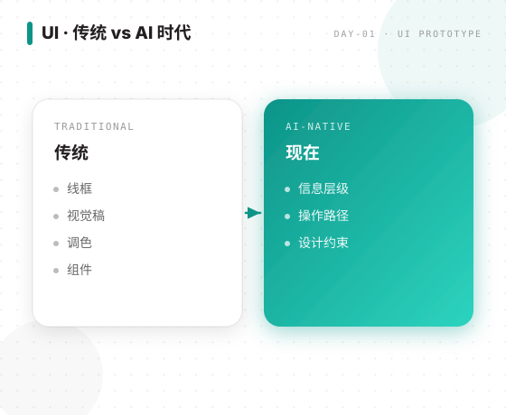
用 5 句话复述
问题 · 操作 · 页面 · 验收
读不到文件就先停下检查
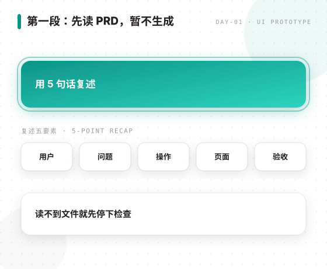
设备 → 首页重点 → 风格 → 主色 → 常用操作
每次只问 1 题，并给推荐理由
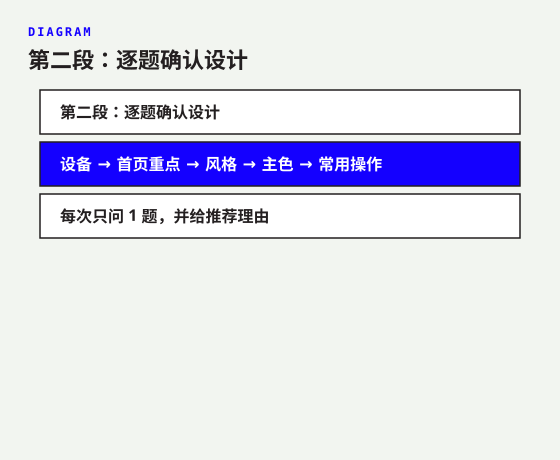
加载中 · 告诉用户正在处理
解释原因与下一步
诚实提示，不留白屏
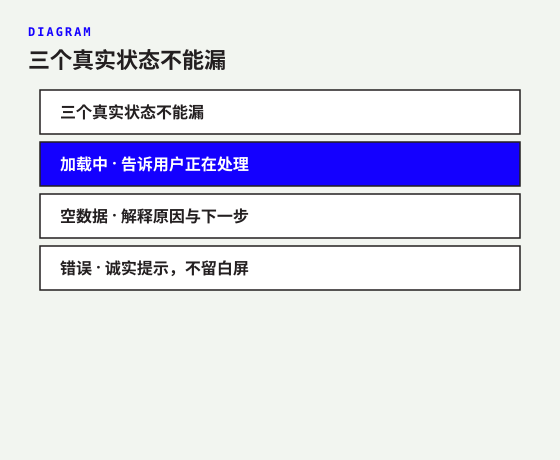
页面结构 + 用户操作路径
不遗漏、不擅自增加
确认页面方案
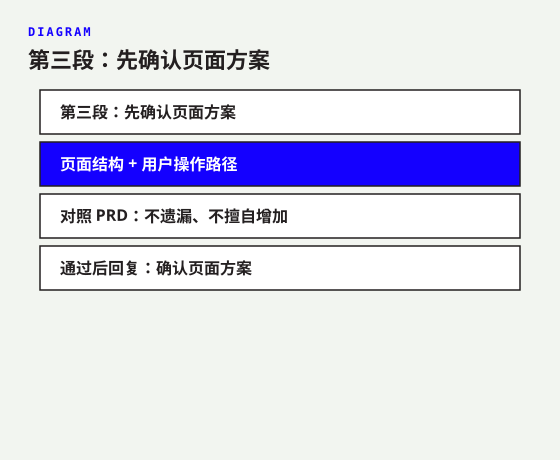
design-spec.md
ui-flow.md
ui-prototype.html
只用演示数据，亲手打开点击
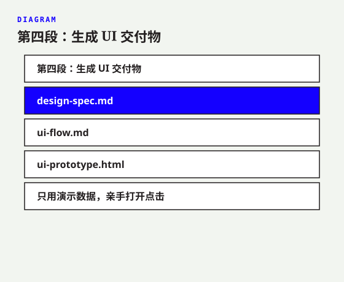
读取 PRD + 设计规范 + 流程 + 原型
通过/不通过 · 原需求 · 责任岗位
产品经理只检查，不直接改 UI
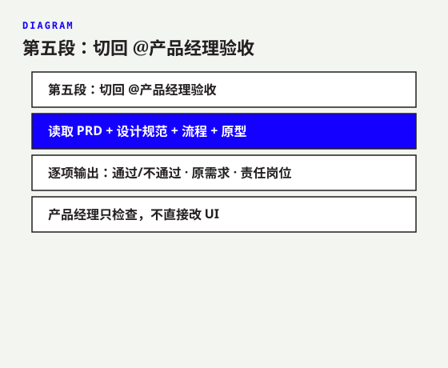
@产品经理 发现问题
@UI 按问题清单修改
@产品经理 再次复验
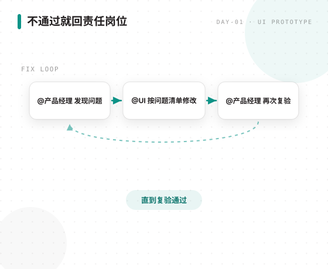
day1-handoff-log.md
UI 交付 · 最终验收
如有修改，再记录问题与复验
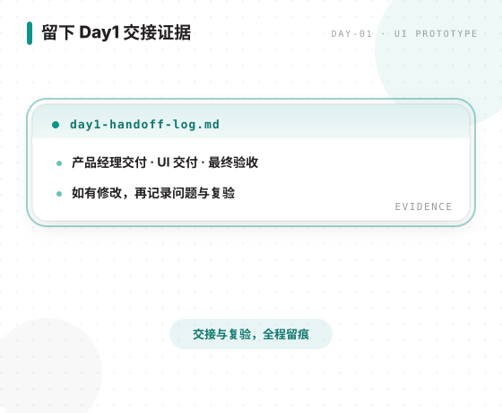
专业问题 → 产品需求 → UI 体验 → 产品验收
谁 · 上游 · 交付 · 下游 · 验收
你正在指挥 AI 团队
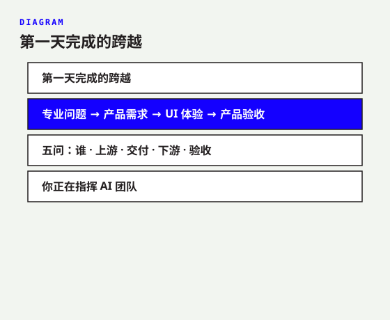